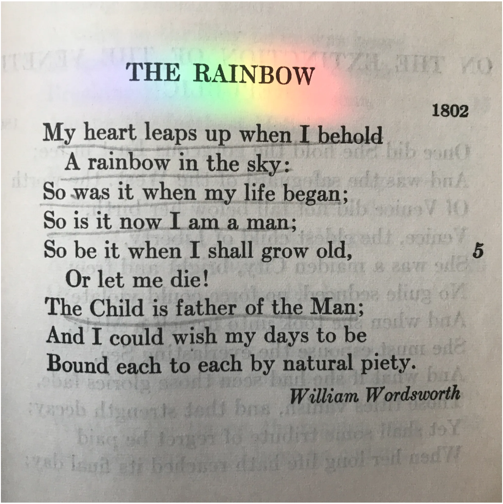
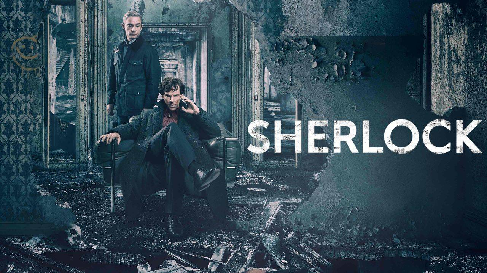
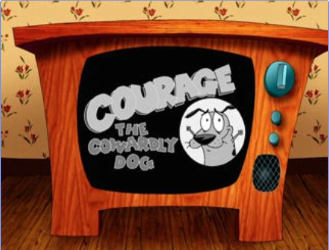

Reading
One of my many interests is reading. Reading has been my solace for the last year. Initially, I was not interested in the literary world because I found it “boring” and “nerdy.” I also faced some difficulties with the topic of reading because I was the last student in my third grade class that learned to read. However, over time, I was introduced to a great book community on Tik Tok called “BookTok.” BookTok welcomed a diverse group of readers. I felt incredibly encouraged and welcomed to be a part of it, and so I was motivated to read more and learn more about the literary world.
My favorite poem is “My Heart Leaps Up” by William Wordsworth. The poem describes Wordsworth’s delight as he sees a rainbow that sparked his child-like enthusiasm for life. Wordsworth invites readers to maintain their child-like nature because it’s what makes life worth living. He inspires us to maintain the boundless curiosity and appreciation that we had as children. As someone who feared growing up and changing, I found hope in this poem, and my pessimism turned into optimism. Wordsworth inspired me to look at the concept of growing up as our younger self walking along with us in our journey in life. By starting to cultivate my child-like nature, I have been beautifully transformed. My child-like nature has allowed me to explore complex wonders like cultural diversity and appreciate that humans were designed to be uniquely equal. I now appreciate life’s rainstorms that are always followed by a rainbow of hope.

Listening to Music
Listening to music is one of my favorite interests. I feel like music is a way for me to vicariously live out whatever fantasy my imagination sparks. I have always been fascinated by music, yet I have not really been interested in composing my own. I find that I prefer to experience whatever one wants to express when it comes to music. I would rather live out the story that other people set up through their music and build up to that story as I listen.
One of my favorite artists is Taylor Swift. Taylor Swift is a classic choice when it comes to musical artists. I admire Taylor Swift’s lyrical compositions, as well as her instrumentals. Every time I listen to Taylor Swift, I try to find a literary device that she uses in her lyrics or I try to find some hidden meanings behind her works because she’s a really big fan of easter eggs. I have been listening to her sporadically since I was seven years old, but as I grew older, I began to find her becoming my main musical artist. Right now, I am fascinated by her album Lover.
Watching TV Shows
Whenever I need a stronger hit to my creativity, I watch TV shows. Having a fictional world acted out before our eyes is the fastest way to tap into our creativity. One would argue that TV shows may have ruined the literary world because it strictly defines whatever world the author of the literary work imagined. I occasionally find myself agreeing with that statement. Sometimes I feel that screen adaptations of literary works ruin a reader’s creative freedom. However, sometimes, we all just need something to truly and deeply tap into our imagination and TV shows (and other forms of screen entertainment) allow that to happen. Truthfully, I cannot deny the magic of seeing a world of imagination be transformed right before our eyes.
One of my favorite TV shows would be BBC’s Sherlock. Sherlock is a British mystery crime drama television series based on Sir Arthur Conan Doyle's Sherlock Holmes detective stories. I enjoy watching this show because I love partaking in the problem —rather, the crime— solving skills that Sherlock Holmes engages in. Exploring the human psyche, both Sherlock’s and the criminals’ psyche, fascinates me in a way that I have always been astounded by. Watching Sherlock is a unique experience and I don’t think another show would parallel its effect on me.
When it comes to shows, I don’t limit myself to shows with real people, I also explore cartoons. I find that cartoons tap into my childhood strongly and I want to relive those days. One of my favorite cartoons is Courage the Cowardly Dog. Courage the Cowardly Dog is an American animated comedy show that ran from November 12, 1999 to November 22, 2002. Whenever I talk about Courage the Cowardly Dog, no one seems to be familiar with the cartoon. For a while I was upset with how I had no one to share this interesting show with, but then I told myself that if I meet someone who knows this show then we’ll surely get along. I have always loved Courage the Cowardly Dog and I will forever reminisce on my kindergarten days of watching this show while waiting for breakfast.